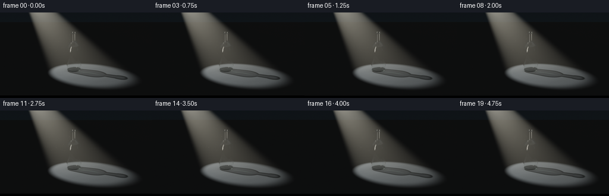
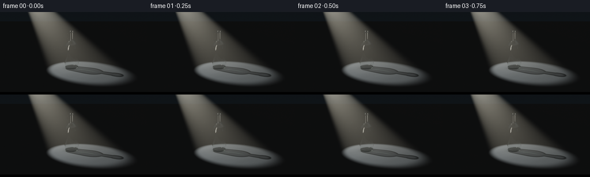
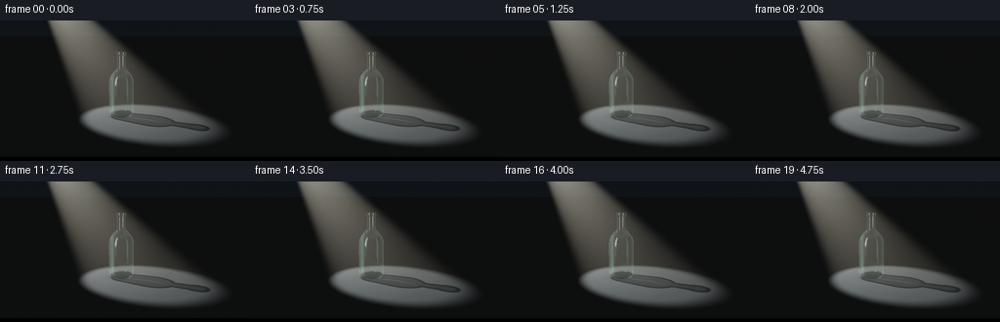
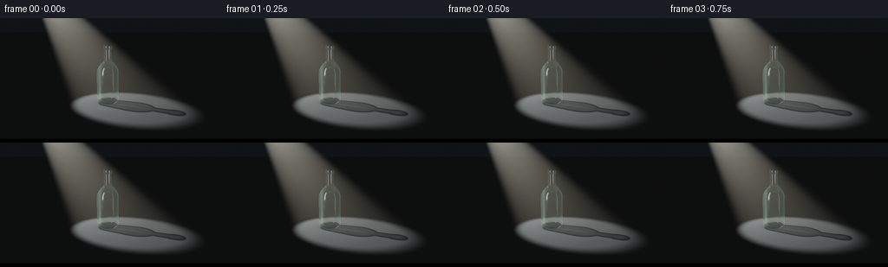
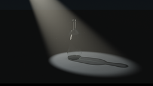

CODING AGENTS AS PIXEL WORLD MODELS
traex/GPT-6.1-Sol · phygen_043
点击播放 · 原生 RGB 像素
逐轮保存的候选
回放视频、检查图与代码变化。
每份候选均可单独播放。实际图片检查记录在下方工具轨迹中。
候选 01播放与检查图
点击播放 · 原生 RGB 像素


展开代码变化
--- 上一保存版本
+++ 本次保存版本
@@ -0,0 +1,281 @@
+"""Analytic glass optics and a volumetric spotlight, rendered with NumPy only."""
+from pathlib import Path
+import json
+import numpy as np
+from PIL import Image, ImageDraw, ImageFilter
+from scipy.interpolate import PchipInterpolator
+from scipy.ndimage import gaussian_filter
+import artifact_io
+
+ROOT = Path(__file__).resolve().parent
+SPEC = json.loads((ROOT/'task_spec.json').read_text())
+W,H=SPEC['width'],SPEC['height']
+S=3
+RW,RH=W*S,H*S
+rng=np.random.default_rng(4301)
+
+def unit(a):
+ return a / np.maximum(np.linalg.norm(a,axis=-1,keepdims=True),1e-12)
+
+def smooth(a,b,x):
+ t=np.clip((x-a)/(b-a),0,1)
+ return t*t*(3-2*t)
+
+# A rounded, hollow, uncapped bottle, with a substantially thicker heel.
+profile=np.array([[.025,.315],[.04,.351],[.075,.386],[.13,.402],[.24,.405],
+ [.55,.407],[1.10,.405],[1.24,.397],[1.34,.365],[1.44,.302],
+ [1.53,.229],[1.60,.164],[1.66,.137],[1.76,.134],[2.045,.134],
+ [2.065,.151],[2.085,.158],[2.13,.158],[2.153,.151],[2.163,.146]])
+curve=PchipInterpolator(profile[:,0],profile[:,1])
+yo=np.unique(np.r_[np.linspace(.025,1.24,19),np.linspace(1.24,1.76,27),np.linspace(1.76,2.163,19)])
+ro=curve(yo)
+yi=np.unique(np.r_[np.linspace(.105,1.24,19),np.linspace(1.24,1.76,27),np.linspace(1.76,2.163,16)])
+ri=curve(yi)-np.where(yi<1.65,.026,.023)
+# All lathed surfaces are intersected as short conical sections.
+segments=[]
+for ys,rs,sign in [(yo,ro,1),(yi,ri,-1)]:
+ for i in range(len(ys)-1):
+ a=(rs[i+1]-rs[i])/(ys[i+1]-ys[i]); b=rs[i]-a*ys[i]
+ segments.append((ys[i],ys[i+1],a,b,sign))
+
+def glass_intersect(o,d):
+ n=len(o); best=np.full(n,1e5); normals=np.zeros((n,3))
+ ox,oy,oz=o.T; dx,dy,dz=d.T
+ dxz=dx*dx+dz*dz; od=ox*dx+oz*dz; oo=ox*ox+oz*oz
+ # Reject rays not overlapping a bounding cylinder/sphere first at caller.
+ for y0,y1,a,b,sign in segments:
+ ry=a*oy+b
+ A=dxz-a*a*dy*dy
+ B=2*(od-ry*a*dy)
+ C=oo-ry*ry
+ det=B*B-4*A*C
+ sd=np.sqrt(np.maximum(det,0))
+ den=2*np.where(np.abs(A)>1e-12,A,1e-12)
+ t0=(-B-sd)/den; t1=(-B+sd)/den
+ for t in (t0,t1):
+ y=oy+t*dy
+ ok=(det>=0)&(t>1e-5)&(t<best)&(y>=y0)&(y<=y1)
+ if np.any(ok):
+ best[ok]=t[ok]
+ px=ox[ok]+t[ok]*dx[ok]; pz=oz[ok]+t[ok]*dz[ok]
+ r=a*y[ok]+b
+ normals[ok]=sign*unit(np.stack((px,-a*r,pz),axis=-1))
+ # Horizontal top annulus, exterior bottom, and interior bottom.
+ for y,r0,r1,sgn in [(2.163,float(ri[-1]),float(ro[-1]),1),(.025,0,float(ro[0]),-1),(.105,0,float(ri[0]),1)]:
+ t=(y-oy)/np.where(np.abs(dy)>1e-10,dy,1e-10)
+ rad2=(ox+t*dx)**2+(oz+t*dz)**2
+ ok=(t>1e-5)&(t<best)&(rad2>=r0*r0)&(rad2<=r1*r1)
+ best[ok]=t[ok]; normals[ok]=[0,sgn,0]
+ return best,normals
+
+CAM=np.array([0.,2.65,7.9])
+TARGET=np.array([0.12,1.02,0.])
+FWD=unit(TARGET-CAM); RIGHT=unit(np.cross(FWD,[0,1,0])); UP=np.cross(RIGHT,FWD)
+LIGHT=np.array([-3.4,5.3,-1.65])
+AXIS=unit(np.array([.14,.40,.10])-LIGHT)
+ANGLE=np.deg2rad(13.5)
+
+def spotlight(p):
+ v=p-LIGHT; r2=np.sum(v*v,axis=-1)
+ cs=np.sum(unit(v)*AXIS,axis=-1)
+ # Soft-edged aperture, a true conical pool on the plane.
+ aperture=smooth(np.cos(ANGLE*1.13),np.cos(ANGLE*.83),cs)
+ return aperture*32/(r2+.5)
+
+# The floor's transparent-object shadow: illuminated rays intersect the hollow silhouette.
+def shadow(p):
+ # Light-to-floor projection with a soft shadow boundary and bright refractive filament.
+ min_dist=np.full(len(p),20.0)
+ for y in np.linspace(.035,2.16,75):
+ a=y/LIGHT[1]
+ xx=p[:,0]*(1-a)+LIGHT[0]*a
+ zz=p[:,2]*(1-a)+LIGHT[2]*a
+ dist=np.sqrt(xx*xx+zz*zz)-float(curve(np.clip(y,.025,2.163)))
+ min_dist=np.minimum(min_dist,dist)
+ body=1-smooth(-.007,.026,min_dist)
+ # Dark fluted silhouette edges remain distinct despite partial central transmission.
+ edge=np.exp(-((min_dist+.018)/.04)**2)
+ central=1-smooth(-.15,-.045,min_dist)
+ trans=1-body*.55-edge*.25+central*.05
+ near=np.exp(-((p[:,0]/.45)**2+(p[:,2]/.42)**2)*2)
+ trans*=1-.43*near
+ # Narrow cast caustic from the curved walls, aligned with the light ray.
+ axis=unit(np.array([-LIGHT[0],-LIGHT[2]]))
+ along=p[:,0]*axis[0]+p[:,2]*axis[1]
+ across=-p[:,0]*axis[1]+p[:,2]*axis[0]
+ caustic=np.exp(-((across-.016-.023*np.sin(along*5))/.035)**2)
+ caustic*=smooth(.12,.4,along)*(1-smooth(1.13,1.62,along))*.16
+ caustic+=.08*np.exp(-((min_dist-.025)/.027)**2)*body
+ return np.clip(trans,.05,1),caustic
+
+# Static floor map allows recursive transmitted and reflected rays to see the same shadow.
+NX=1000; NZ=1000
+xs=np.linspace(-9,9,NX); zs=np.linspace(-8,11,NZ)
+xx,zz=np.meshgrid(xs,zs)
+fp=np.stack([xx.ravel(),np.zeros(xx.size),zz.ravel()],axis=-1)
+print('Building floor and refracted shadow...',flush=True)
+sh,ca=shadow(fp)
+spot=spotlight(fp)
+# Subtle porous slate, not a distracting checkerboard.
+texture=(np.sin(fp[:,0]*73+np.sin(fp[:,2]*21))*np.sin(fp[:,2]*91+fp[:,0]*11)*.015
+ +np.sin(fp[:,0]*3.8+fp[:,2]*4.1)*.013+np.sin(fp[:,2]*13.1+fp[:,0]*8)*.005)
+noise=rng.normal(0,.008,len(fp))
+base=np.array([.19,.205,.21])[None,:]*(1+texture[:,None]+noise[:,None])
+floor=base*(.028+spot[:,None]*sh[:,None]*.73)+ca[:,None]*np.array([.13,.18,.15])
+# Very dim spill and a grounded contact shadow.
+floor*= (1-.18*np.exp(-((fp[:,0]/.6)**2+(fp[:,2]/.34)**2)*3))[:,None]
+floor=floor.reshape(NZ,NX,3).astype(np.float32)
+
+def floor_lookup(p):
+ x=np.clip((p[:,0]+9)/18*(NX-1),0,NX-1.001)
+ z=np.clip((p[:,2]+8)/19*(NZ-1),0,NZ-1.001)
+ ix=x.astype(int); iz=z.astype(int); tx=(x-ix)[:,None]; tz=(z-iz)[:,None]
+ return ((1-tx)*(1-tz)*floor[iz,ix]+tx*(1-tz)*floor[iz,ix+1]
+ +(1-tx)*tz*floor[iz+1,ix]+tx*tz*floor[iz+1,ix+1])
+
+def environment(o,d,reflect=False):
+ n=len(o)
+ horizon=np.exp(-(d[:,1]/.18)**2)
+ col=np.tile([.0035,.006,.008],(n,1))+horizon[:,None]*np.array([.003,.004,.005])
+ down=d[:,1]<-1e-6
+ if np.any(down):
+ t=-o[down,1]/d[down,1]
+ p=o[down]+t[:,None]*d[down]
+ col[down]=floor_lookup(p)
+ if reflect:
+ # Off-screen light source surfaces give the glass real Fresnel highlights.
+ for z,x0,x1,y0,y1,power,tint in [(3.,-3.9,-2.65,.65,5.9,3.9,[1,.96,.84]),
+ (2.3,2.9,3.15,.6,3.6,.42,[.67,.84,1.]),
+ (3.1,-1.72,-1.65,1.7,4.7,.42,[1.,1.,.97])]:
+ t=(z-o[:,2])/np.where(np.abs(d[:,2])>1e-9,d[:,2],1e-9)
+ x=o[:,0]+t*d[:,0]; y=o[:,1]+t*d[:,1]
+ a=smooth(x0,x0+.07,x)*(1-smooth(x1-.07,x1,x))
+ a*=smooth(y0,y0+.15,y)*(1-smooth(y1-.15,y1,y))*(t>0)
+ col+=a[:,None]*power*np.array(tint)
+ # A small circular highlight from the principal diagonal light.
+ tolight=unit(LIGHT-o)
+ dot=np.sum(tolight*d,axis=-1)
+ glint=np.exp(-np.maximum(0,1-dot)/.0015)*3
+ col+=glint[:,None]*np.array([1.,.94,.80])
+ return col
+
+ys,xpix=np.mgrid[0:RH,0:RW]
+fov=np.deg2rad(32.3)
+px=((xpix+.5)/RW-.5)*2*np.tan(fov/2)*RW/RH
+py=(.5-(ys+.5)/RH)*2*np.tan(fov/2)
+dirs=unit(FWD+px[...,None]*RIGHT+py[...,None]*UP).reshape(-1,3)
+orig=np.broadcast_to(CAM,dirs.shape).copy()
+baseimg=environment(orig,dirs)
+# Rays potentially intersecting the object's bounding sphere only.
+cc=np.array([0,1.09,0]); oc=CAM-cc
+b=np.sum(dirs*oc,axis=1); disc=b*b-(np.dot(oc,oc)-1.17**2)
+ids=np.flatnonzero(disc>=0)
+o=orig[ids].copy(); d=dirs[ids].copy()
+weight=np.ones((len(ids),3)); color=np.zeros_like(weight); inside=np.zeros(len(ids),bool)
+print('Tracing glass, primary rays:',len(ids),flush=True)
+for bounce in range(10):
+ t,n=glass_intersect(o,d)
+ hit=t<1e4
+ color[~hit]+=weight[~hit]*environment(o[~hit],d[~hit])
+ if not np.any(hit): break
+ # Save accumulated results for ended rays; keep original indexing.
+ baseimg[ids[~hit]]=color[~hit]
+ ids=ids[hit]; o=o[hit]; d=d[hit]; weight=weight[hit]; color=color[hit]; inside=inside[hit]; t=t[hit]; n=n[hit]
+ if np.any(inside):
+ weight[inside]*=np.exp(-t[inside,None]*np.array([.34,.095,.19]))
+ p=o+d*t[:,None]
+ nd=np.sum(d*n,axis=1)
+ nf=np.where((nd<0)[:,None],n,-n)
+ cosi=np.clip(-np.sum(nf*d,axis=1),0,1)
+ eta=np.where(inside,1.49,1/1.49)
+ k=1-eta*eta*(1-cosi*cosi)
+ tir=k<0
+ # Unpolarized dielectric Fresnel, rather than an opaque shiny coating.
+ cost=np.sqrt(np.maximum(k,0))
+ n1=np.where(inside,1.49,1.); n2=np.where(inside,1.,1.49)
+ rs=((n1*cosi-n2*cost)/np.maximum(n1*cosi+n2*cost,1e-8))**2
+ rp=((n1*cost-n2*cosi)/np.maximum(n1*cost+n2*cosi,1e-8))**2
+ fres=np.where(tir,1,(rs+rp)*.5)
+ refl=unit(d+2*cosi[:,None]*nf)
+ reflected=environment(p+nf*1e-4,refl,reflect=True)
+ color+=weight*fres[:,None]*reflected*(~tir)[:,None]
+ # For total internal reflection keep the ray, not a black termination.
+ rd=unit(eta[:,None]*d+(eta*cosi-cost)[:,None]*nf)
+ d=np.where(tir[:,None],refl,rd)
+ weight*=np.where(tir,1,1-fres)[:,None]
+ inside=np.where(tir,inside,~inside)
+ o=p+d*2e-5
+ baseimg[ids]=color
+ print(' bounce',bounce+1,'rays',len(ids),flush=True)
+# Residual energy exits to the dark studio environment.
+baseimg[ids]=color+weight*environment(o,d,reflect=False)
+baseimg=baseimg.reshape(RH,RW,3)
+
+# Single-scattering integration through the spotlight's cone.
+print('Integrating diagonal shaft...',flush=True)
+flat=dirs
+floor_t=np.where(flat[:,1]<-1e-5,-CAM[1]/np.minimum(flat[:,1],-1e-5),14.)
+max_t=np.minimum(floor_t,14.)
+fog=np.zeros((len(flat),3))
+steps=68
+for i in range(steps):
+ t=(i+.5)/steps*max_t
+ p=CAM+flat*t[:,None]
+ illumination=spotlight(p)
+ # Broad forward-scattering phase; faint mist, not a solid painted triangle.
+ ld=unit(p-LIGHT)
+ cs=np.sum(ld*(-flat),axis=1)
+ g=.25
+ phase=(1-g*g)/np.maximum(1+g*g-2*g*cs,.01)**1.5
+ density=.025*(1+.06*np.sin(p[:,0]*3+p[:,1]*4+p[:,2]*2))
+ fog+= (illumination*phase*density*max_t/steps)[:,None]*np.array([1.,.955,.82])
+fog=fog.reshape(RH,RW,3)
+# Fine, restrained bloom from the strongest glass highlights.
+lin=baseimg+fog
+bright=np.maximum(lin-.38,0)
+bloom=gaussian_filter(bright,(2.7,2.7,0))*.14+gaussian_filter(bright,(9,9,0))*.035
+lin+=bloom
+# Camera tone response preserves deep blacks and soft warm highlights.
+def encode(a):
+ a=np.maximum(a,0)
+ a=(a*(2.51*a+.03))/(a*(2.43*a+.59)+.14)
+ return np.clip(a,0,1)**(1/2.2)
+
+# Drifting illuminated dust is sparse and subpixel, never snow-like.
+particles=[]
+for k in range(34):
+ pos=np.array([rng.uniform(-1.65,1.4),rng.uniform(.2,3.9),rng.uniform(-.8,1.7)])
+ if spotlight(pos[None,:])[0]>.23:
+ particles.append((pos,rng.uniform(.02,.065),rng.uniform(0,2*np.pi)))
+
+def project(p):
+ q=p-CAM; depth=q@FWD
+ return (q@RIGHT/depth/(2*np.tan(fov/2)*RW/RH)+.5)*RW, (.5-q@UP/depth/(2*np.tan(fov/2)))*RH
+
+frames=[]
+for frame in range(SPEC['frames']):
+ time=frame/SPEC['fps']
+ fluct=1+.007*np.sin(time*1.25)+.003*np.sin(time*3.1)
+ im=encode(baseimg*fluct+fog*(fluct+.004*np.sin(time*.8))+bloom)
+ # Gentle natural photographic texture, stable surface detail rather than temporal flicker.
+ grain=rng.normal(0,.00115,(RH,RW,1))
+ im=np.clip(im+grain,0,1)
+ rgb=Image.fromarray(np.uint8(im*255))
+ dust=Image.new('RGB',(RW,RH)); draw=ImageDraw.Draw(dust)
+ for pos,lum,phase in particles:
+ p=pos+np.array([.012*np.sin(time*.5+phase),.018*time,.01*np.cos(time*.7+phase)])
+ x,y=project(p)
+ if 0<x<RW and 0<y<RH:
+ lum*=.75+.25*np.sin(phase+time*.8)**2
+ c=int(lum*255)
+ r=.7
+ draw.ellipse((x-r,y-r,x+r,y+r),fill=(c,int(c*.95),int(c*.82)))
+ dust=np.asarray(dust.filter(ImageFilter.GaussianBlur(.48)),dtype=np.float32)
+ rgb=Image.fromarray(np.uint8(np.clip(np.asarray(rgb,dtype=float)+dust,0,255)))
+ # Barely perceptible 1.1% cinematic push-in, bottle and shadow remain fixed together.
+ zoom=1+.011*frame/(SPEC['frames']-1)
+ cw=RW/zoom; ch=RH/zoom; cx=RW*.5; cy=RH*.53
+ rgb=rgb.crop((cx-cw/2,cy-ch/2,cx+cw/2,cy+ch/2)).resize((W,H),Image.Resampling.LANCZOS)
+ frames.append(np.asarray(rgb))
+artifact_io.save(np.stack(frames).astype(np.uint8),ROOT)
+print('Saved',len(frames),'RGB frames.',flush=True)
候选 02播放与检查图
点击播放 · 原生 RGB 像素


展开代码变化
--- 上一保存版本
+++ 本次保存版本
@@ -145,7 +145,7 @@
if reflect:
# Off-screen light source surfaces give the glass real Fresnel highlights.
for z,x0,x1,y0,y1,power,tint in [(3.,-3.9,-2.65,.65,5.9,3.9,[1,.96,.84]),
- (2.3,2.9,3.15,.6,3.6,.42,[.67,.84,1.]),
+ (2.3,2.5,3.25,-.1,4.6,1.05,[.67,.84,1.]),
(3.1,-1.72,-1.65,1.7,4.7,.42,[1.,1.,.97])]:
t=(z-o[:,2])/np.where(np.abs(d[:,2])>1e-9,d[:,2],1e-9)
x=o[:,0]+t*d[:,0]; y=o[:,1]+t*d[:,1]
@@ -199,6 +199,14 @@
refl=unit(d+2*cosi[:,None]*nf)
reflected=environment(p+nf*1e-4,refl,reflect=True)
color+=weight*fres[:,None]*reflected*(~tir)[:,None]
+ if bounce == 0:
+ # Wide studio fill grazes the rolled rim and curved outer walls.
+ # This is a weak dielectric surface reflection, leaving the interior transparent.
+ grazing=(1-cosi)**3
+ wrap=np.exp(-((n[:,0]+.72)/.15)**2)
+ vertical=(1-smooth(1.30,1.61,p[:,1]))*smooth(.10,.22,p[:,1])
+ sheen=(.009+.10*grazing+.075*wrap*vertical)
+ color+=sheen[:,None]*np.array([.57,.91,.76])
# For total internal reflection keep the ray, not a black termination.
rd=unit(eta[:,None]*d+(eta*cosi-cost)[:,None]*nf)
d=np.where(tir[:,None],refl,rd)
可观测工具轨迹
实际执行的命令与返回图片。
命令 1exit 0
/bin/bash -lc 'ls -la && cat prompt.txt && cat GENERATION_RULES.md && cat task_spec.json'
命令 2exit 0
/bin/bash -lc "cat artifact_io.py && python - <<'PY' import importlib.util for x in ['numpy','PIL','scipy']: print(x, bool(importlib.util.find_spec(x))) PY"
命令 3exit 0
/bin/bash -lc "cat > generate.py <<'PY'
\"\"\"Analytic glass optics and a volumetric spotlight, rendered with NumPy only.\"\"\"
from pathlib import Path
import json
import numpy as np
from PIL import Image, ImageDraw, ImageFilter
from scipy.interpolate import PchipInterpolator
from scipy.ndimage import gaussian_filter
import artifact_io
ROOT = Path(__file__).resolve().parent
SPEC = json.loads((ROOT/'task_spec.json').read_text())
W,H=SPEC['width'],SPEC['height']
S=3
RW,RH=W*S,H*S
rng=np.random.default_rng(4301)
def unit(a):
return a / np.maximum(np.linalg.norm(a,axis=-1,keepdims=True),1e-12)
def smooth(a,b,x):
t=np.clip((x-a)/(b-a),0,1)
return t*t*(3-2*t)
# A rounded, hollow, uncapped bottle, with a substantially thicker heel.
profile=np.array([[.025,.315],[.04,.351],[.075,.386],[.13,.402],[.24,.405],
[.55,.407],[1.10,.405],[1.24,.397],[1.34,.365],[1.44,.302],
[1.53,.229],[1.60,.164],[1.66,.137],[1.76,.134],[2.045,.134],
[2.065,.151],[2.085,.158],[2.13,.158],[2.153,.151],[2.163,.146]])
curve=PchipInterpolator(profile[:,0],profile[:,1])
yo=np.unique(np.r_[np.linspace(.025,1.24,19),np.linspace(1.24,1.76,27),np.linspace(1.76,2.163,19)])
ro=curve(yo)
yi=np.unique(np.r_[np.linspace(.105,1.24,19),np.linspace(1.24,1.76,27),np.linspace(1.76,2.163,16)])
ri=curve(yi)-np.where(yi<1.65,.026,.023)
# All lathed surfaces are intersected as short conical sections.
segments=[]
for ys,rs,sign in [(yo,ro,1),(yi,ri,-1)]:
for i in range(len(ys)-1):
a=(rs[i+1]-rs[i])/(ys[i+1]-ys[i]); b=rs[i]-a*ys[i]
segments.append((ys[i],ys[i+1],a,b,sign))
def glass_intersect(o,d):
n=len(o); best=np.full(n,1e5); normals=np.zeros((n,3))
ox,oy,oz=o.T; dx,dy,dz=d.T
dxz=dx*dx+dz*dz; od=ox*dx+oz*dz; oo=ox*ox+oz*oz
# Reject rays not overlapping a bounding cylinder/sphere first at caller.
for y0,y1,a,b,sign in segments:
ry=a*oy+b
A=dxz-a*a*dy*dy
B=2*(od-ry*a*dy)
C=oo-ry*ry
det=B*B-4*A*C
sd=np.sqrt(np.maximum(det,0))
den=2*np.where(np.abs(A)>1e-12,A,1e-12)
t0=(-B-sd)/den; t1=(-B+sd)/den
for t in (t0,t1):
y=oy+t*dy
ok=(det>=0)&(t>1e-5)&(t<best)&(y>=y0)&(y<=y1)
if np.any(ok):
best[ok]=t[ok]
px=ox[ok]+t[ok]*dx[ok]; pz=oz[ok]+t[ok]*dz[ok]
r=a*y[ok]+b
normals[ok]=sign*unit(np.stack((px,-a*r,pz),axis=-1))
# Horizontal top annulus, exterior bottom, and interior bottom.
for y,r0,r1,sgn in [(2.163,float(ri[-1]),float(ro[-1]),1),(.025,0,float(ro[0]),-1),(.105,0,float(ri[0]),1)]:
t=(y-oy)/np.where(np.abs(dy)>1e-10,dy,1e-10)
rad2=(ox+t*dx)**2+(oz+t*dz)**2
ok=(t>1e-5)&(t<best)&(rad2>=r0*r0)&(rad2<=r1*r1)
best[ok]=t[ok]; normals[ok]=[0,sgn,0]
return best,normals
CAM=np.array([0.,2.65,7.9])
TARGET=np.array([0.12,1.02,0.])
FWD=unit(TARGET-CAM); RIGHT=unit(np.cross(FWD,[0,1,0])); UP=np.cross(RIGHT,FWD)
LIGHT=np.array([-3.4,5.3,-1.65])
AXIS=unit(np.array([.14,.40,.10])-LIGHT)
ANGLE=np.deg2rad(13.5)
def spotlight(p):
v=p-LIGHT; r2=np.sum(v*v,axis=-1)
cs=np.sum(unit(v)*AXIS,axis=-1)
# Soft-edged aperture, a true conical pool on the plane.
aperture=smooth(np.cos(ANGLE*1.13),np.cos(ANGLE*.83),cs)
return aperture*32/(r2+.5)
# The floor's transparent-object shadow: illuminated rays intersect the hollow silhouette.
def shadow(p):
# Light-to-floor projection with a soft shadow boundary and bright refractive filament.
min_dist=np.full(len(p),20.0)
for y in np.linspace(.035,2.16,75):
a=y/LIGHT[1]
xx=p[:,0]*(1-a)+LIGHT[0]*a
zz=p[:,2]*(1-a)+LIGHT[2]*a
dist=np.sqrt(xx*xx+zz*zz)-float(curve(np.clip(y,.025,2.163)))
min_dist=np.minimum(min_dist,dist)
body=1-smooth(-.007,.026,min_dist)
# Dark fluted silhouette edges remain distinct despite partial central transmission.
edge=np.exp(-((min_dist+.018)/.04)**2)
central=1-smooth(-.15,-.045,min_dist)
trans=1-body*.55-edge*.25+central*.05
near=np.exp(-((p[:,0]/.45)**2+(p[:,2]/.42)**2)*2)
trans*=1-.43*near
# Narrow cast caustic from the curved walls, aligned with the light ray.
axis=unit(np.array([-LIGHT[0],-LIGHT[2]]))
along=p[:,0]*axis[0]+p[:,2]*axis[1]
across=-p[:,0]*axis[1]+p[:,2]*axis[0]
caustic=np.exp(-((across-.016-.023*np.sin(along*5))/.035)**2)
caustic*=smooth(.12,.4,along)*(1-smooth(1.13,1.62,along))*.16
caustic+=.08*np.exp(-((min_dist-.025)/.027)**2)*body
return np.clip(trans,.05,1),caustic
# Static floor map allows recursive transmitted and reflected rays to see the same shadow.
NX=1000; NZ=1000
xs=np.linspace(-9,9,NX); zs=np.linspace(-8,11,NZ)
xx,zz=np.meshgrid(xs,zs)
fp=np.stack([xx.ravel(),np.zeros(xx.size),zz.ravel()],axis=-1)
print('Building floor and refracted shadow...',flush=True)
sh,ca=shadow(fp)
spot=spotlight(fp)
# Subtle porous slate, not a distracting checkerboard.
texture=(np.sin(fp[:,0]*73+np.sin(fp[:,2]*21))*np.sin(fp[:,2]*91+fp[:,0]*11)*.015
+np.sin(fp[:,0]*3.8+fp[:,2]*4.1)*.013+np.sin(fp[:,2]*13.1+fp[:,0]*8)*.005)
noise=rng.normal(0,.008,len(fp))
base=np.array([.19,.205,.21])[None,:]*(1+texture[:,None]+noise[:,None])
floor=base*(.028+spot[:,None]*sh[:,None]*.73)+ca[:,None]*np.array([.13,.18,.15])
# Very dim spill and a grounded contact shadow.
floor*= (1-.18*np.exp(-((fp[:,0]/.6)**2+(fp[:,2]/.34)**2)*3))[:,None]
floor=floor.reshape(NZ,NX,3).astype(np.float32)
def floor_lookup(p):
x=np.clip((p[:,0]+9)/18*(NX-1),0,NX-1.001)
z=np.clip((p[:,2]+8)/19*(NZ-1),0,NZ-1.001)
ix=x.astype(int); iz=z.astype(int); tx=(x-ix)[:,None]; tz=(z-iz)[:,None]
return ((1-tx)*(1-tz)*floor[iz,ix]+tx*(1-tz)*floor[iz,ix+1]
+(1-tx)*tz*floor[iz+1,ix]+tx*tz*floor[iz+1,ix+1])
def environment(o,d,reflect=False):
n=len(o)
horizon=np.exp(-(d[:,1]/.18)**2)
col=np.tile([.0035,.006,.008],(n,1))+horizon[:,None]*np.array([.003,.004,.005])
down=d[:,1]<-1e-6
if np.any(down):
t=-o[down,1]/d[down,1]
p=o[down]+t[:,None]*d[down]
col[down]=floor_lookup(p)
if reflect:
# Off-screen light source surfaces give the glass real Fresnel highlights.
for z,x0,x1,y0,y1,power,tint in [(3.,-3.9,-2.65,.65,5.9,3.9,[1,.96,.84]),
(2.3,2.9,3.15,.6,3.6,.42,[.67,.84,1.]),
(3.1,-1.72,-1.65,1.7,4.7,.42,[1.,1.,.97])]:
t=(z-o[:,2])/np.where(np.abs(d[:,2])>1e-9,d[:,2],1e-9)
x=o[:,0]+t*d[:,0]; y=o[:,1]+t*d[:,1]
a=smooth(x0,x0+.07,x)*(1-smooth(x1-.07,x1,x))
a*=smooth(y0,y0+.15,y)*(1-smooth(y1-.15,y1,y))*(t>0)
col+=a[:,None]*power*np.array(tint)
# A small circular highlight from the principal diagonal light.
tolight=unit(LIGHT-o)
dot=np.sum(tolight*d,axis=-1)
glint=np.exp(-np.maximum(0,1-dot)/.0015)*3
col+=glint[:,None]*np.array([1.,.94,.80])
return col
ys,xpix=np.mgrid[0:RH,0:RW]
fov=np.deg2rad(32.3)
px=((xpix+.5)/RW-.5)*2*np.tan(fov/2)*RW/RH
py=(.5-(ys+.5)/RH)*2*np.tan(fov/2)
dirs=unit(FWD+px[...,None]*RIGHT+py[...,None]*UP).reshape(-1,3)
orig=np.broadcast_to(CAM,dirs.shape).copy()
baseimg=environment(orig,dirs)
# Rays potentially intersecting the object's bounding sphere only.
cc=np.array([0,1.09,0]); oc=CAM-cc
b=np.sum(dirs*oc,axis=1); disc=b*b-(np.dot(oc,oc)-1.17**2)
ids=np.flatnonzero(disc>=0)
o=orig[ids].copy(); d=dirs[ids].copy()
weight=np.ones((len(ids),3)); color=np.zeros_like(weight); inside=np.zeros(len(ids),bool)
print('Tracing glass, primary rays:',len(ids),flush=True)
for bounce in range(10):
t,n=glass_intersect(o,d)
hit=t<1e4
color[~hit]+=weight[~hit]*environment(o[~hit],d[~hit])
if not np.any(hit): break
# Save accumulated results for ended rays; keep original indexing.
baseimg[ids[~hit]]=color[~hit]
ids=ids[hit]; o=o[hit]; d=d[hit]; weight=weight[hit]; color=color[hit]; inside=inside[hit]; t=t[hit]; n=n[hit]
if np.any(inside):
weight[inside]*=np.exp(-t[inside,None]*np.array([.34,.095,.19]))
p=o+d*t[:,None]
nd=np.sum(d*n,axis=1)
nf=np.where((nd<0)[:,None],n,-n)
cosi=np.clip(-np.sum(nf*d,axis=1),0,1)
eta=np.where(inside,1.49,1/1.49)
k=1-eta*eta*(1-cosi*cosi)
tir=k<0
# Unpolarized dielectric Fresnel, rather than an opaque shiny coating.
cost=np.sqrt(np.maximum(k,0))
n1=np.where(inside,1.49,1.); n2=np.where(inside,1.,1.49)
rs=((n1*cosi-n2*cost)/np.maximum(n1*cosi+n2*cost,1e-8))**2
rp=((n1*cost-n2*cosi)/np.maximum(n1*cost+n2*cosi,1e-8))**2
fres=np.where(tir,1,(rs+rp)*.5)
refl=unit(d+2*cosi[:,None]*nf)
reflected=environment(p+nf*1e-4,refl,reflect=True)
color+=weight*fres[:,None]*reflected*(~tir)[:,None]
# For total internal reflection keep the ray, not a black termination.
rd=unit(eta[:,None]*d+(eta*cosi-cost)[:,None]*nf)
d=np.where(tir[:,None],refl,rd)
weight*=np.where(tir,1,1-fres)[:,None]
inside=np.where(tir,inside,~inside)
o=p+d*2e-5
baseimg[ids]=color
print(' bounce',bounce+1,'rays',len(ids),flush=True)
# Residual energy exits to the dark studio environment.
baseimg[ids]=color+weight*environment(o,d,reflect=False)
baseimg=baseimg.reshape(RH,RW,3)
# Single-scattering integration through the spotlight's cone.
print('Integrating diagonal shaft...',flush=True)
flat=dirs
floor_t=np.where(flat[:,1]<-1e-5,-CAM[1]/np.minimum(flat[:,1],-1e-5),14.)
max_t=np.minimum(floor_t,14.)
fog=np.zeros((len(flat),3))
steps=68
for i in range(steps):
t=(i+.5)/steps*max_t
p=CAM+flat*t[:,None]
illumination=spotlight(p)
# Broad forward-scattering phase; faint mist, not a solid painted triangle.
ld=unit(p-LIGHT)
cs=np.sum(ld*(-flat),axis=1)
g=.25
phase=(1-g*g)/np.maximum(1+g*g-2*g*cs,.01)**1.5
density=.025*(1+.06*np.sin(p[:,0]*3+p[:,1]*4+p[:,2]*2))
fog+= (illumination*phase*density*max_t/steps)[:,None]*np.array([1.,.955,.82])
fog=fog.reshape(RH,RW,3)
# Fine, restrained bloom from the strongest glass highlights.
lin=baseimg+fog
bright=np.maximum(lin-.38,0)
bloom=gaussian_filter(bright,(2.7,2.7,0))*.14+gaussian_filter(bright,(9,9,0))*.035
lin+=bloom
# Camera tone response preserves deep blacks and soft warm highlights.
def encode(a):
a=np.maximum(a,0)
a=(a*(2.51*a+.03))/(a*(2.43*a+.59)+.14)
return np.clip(a,0,1)**(1/2.2)
# Drifting illuminated dust is sparse and subpixel, never snow-like.
particles=[]
for k in range(34):
pos=np.array([rng.uniform(-1.65,1.4),rng.uniform(.2,3.9),rng.uniform(-.8,1.7)])
if spotlight(pos[None,:])[0]>.23:
particles.append((pos,rng.uniform(.02,.065),rng.uniform(0,2*np.pi)))
def project(p):
q=p-CAM; depth=q@FWD
return (q@RIGHT/depth/(2*np.tan(fov/2)*RW/RH)+.5)*RW, (.5-q@UP/depth/(2*np.tan(fov/2)))*RH
frames=[]
for frame in range(SPEC['frames']):
time=frame/SPEC['fps']
fluct=1+.007*np.sin(time*1.25)+.003*np.sin(time*3.1)
im=encode(baseimg*fluct+fog*(fluct+.004*np.sin(time*.8))+bloom)
# Gentle natural photographic texture, stable surface detail rather than temporal flicker.
grain=rng.normal(0,.00115,(RH,RW,1))
im=np.clip(im+grain,0,1)
rgb=Image.fromarray(np.uint8(im*255))
dust=Image.new('RGB',(RW,RH)); draw=ImageDraw.Draw(dust)
for pos,lum,phase in particles:
p=pos+np.array([.012*np.sin(time*.5+phase),.018*time,.01*np.cos(time*.7+phase)])
x,y=project(p)
if 0<x<RW and 0<y<RH:
lum*=.75+.25*np.sin(phase+time*.8)**2
c=int(lum*255)
r=.7
draw.ellipse((x-r,y-r,x+r,y+r),fill=(c,int(c*.95),int(c*.82)))
dust=np.asarray(dust.filter(ImageFilter.GaussianBlur(.48)),dtype=np.float32)
rgb=Image.fromarray(np.uint8(np.clip(np.asarray(rgb,dtype=float)+dust,0,255)))
# Barely perceptible 1.1% cinematic push-in, bottle and shadow remain fixed together.
zoom=1+.011*frame/(SPEC['frames']-1)
cw=RW/zoom; ch=RH/zoom; cx=RW*.5; cy=RH*.53
rgb=rgb.crop((cx-cw/2,cy-ch/2,cx+cw/2,cy+ch/2)).resize((W,H),Image.Resampling.LANCZOS)
frames.append(np.asarray(rgb))
artifact_io.save(np.stack(frames).astype(np.uint8),ROOT)
print('Saved',len(frames),'RGB frames.',flush=True)
PY
OPENBLAS_NUM_THREADS=1 python generate.py"命令 4exit 0
/bin/bash -lc "python - <<'PY'
from PIL import Image
im=Image.open('frames/00.png'); im.resize((1024,576)).save('.tmp/large.png')
PY"命令 5exit 0
/bin/bash -lc "python - <<'PY'
p='generate.py'
s=open(p).read().replace(\"(2.3,2.9,3.15,.6,3.6,.42,[.67,.84,1.])\", \"(2.3,2.5,3.25,-.1,4.6,1.05,[.67,.84,1.])\")
s=s.replace(\"color+=weight*fres[:,None]*reflected*(~tir)[:,None]\", \"\"\"color+=weight*fres[:,None]*reflected*(~tir)[:,None]
if bounce == 0:
# Wide studio fill grazes the rolled rim and curved outer walls.
# This is a weak dielectric surface reflection, leaving the interior transparent.
grazing=(1-cosi)**3
wrap=np.exp(-((n[:,0]+.72)/.15)**2)
vertical=(1-smooth(1.30,1.61,p[:,1]))*smooth(.10,.22,p[:,1])
sheen=(.009+.10*grazing+.075*wrap*vertical)
color+=sheen[:,None]*np.array([.57,.91,.76])\"\"\")
open(p,'w').write(s)
PY
OPENBLAS_NUM_THREADS=1 python generate.py"视觉工具实际返回图片 1

视觉工具实际返回图片 2
保存候选 2 份；完成命令 5 次；可验证图片返回 2 张。原始 API 响应与完整日志保留在本地。